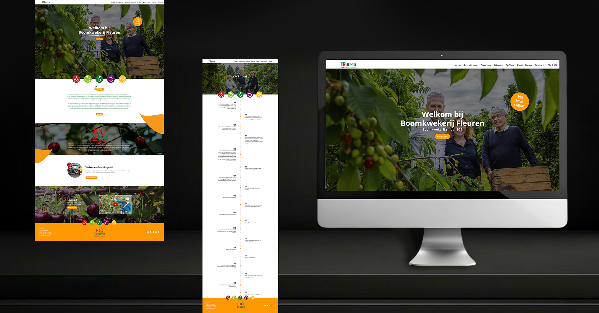
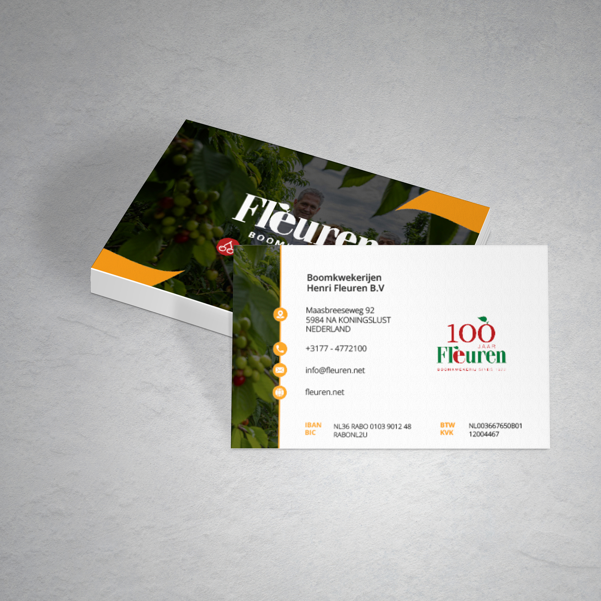

Fleuren

De opdracht
Fleuren is een boomkwekerij die zich richt op diverse boomteeltrassen, voornamelijk van appels en kersen. Ze hadden een nieuwe website nodig die hun assortiment en vakmanschap goed laat zien aan (potentiële) klanten in de boomteelt.
Aanpak & resultaat
Ik ontwierp een webdesign dat overzichtelijk laat zien welke rassen Fleuren aanbiedt en hoe ze te werk gaan, met ruimte voor sterk beeldmateriaal van de kwekerij zelf.
Het resultaat is een heldere, professionele website die goed aansluit bij de vakkennis en ervaring van Fleuren. De website is gebouwd met Viasual Studio Code, hier zat geen zelfsturend WordPress systeem achter.

